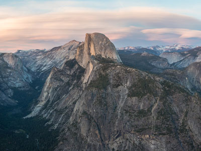
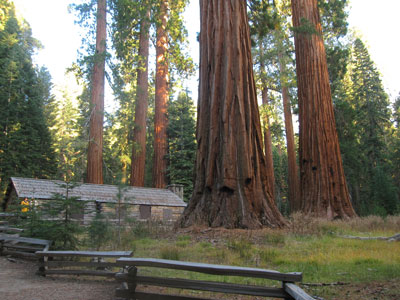
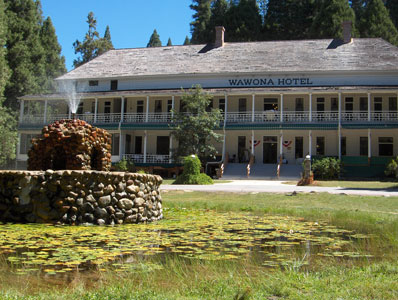
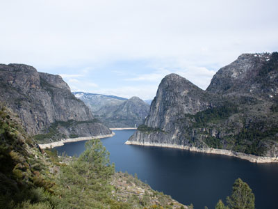
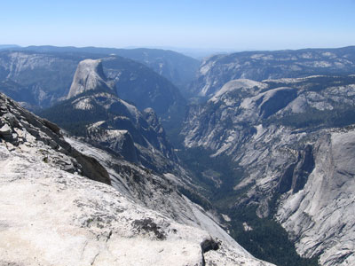

Yosemite National Park Travel Guide
Park in the western Sierra Nevada of Central California, internationally recognized for its granite cliffs, waterfalls, clear streams, giant sequoia groves, lakes, mountains, meadows, glaciers, and biological diversity
A reservation is not required to enter Yosemite in 2026.
Open 24/7. However, the Hetch Hetchy Entrance Station is open only during daylight hours (approximately) and some roads are closed due to snow from around November through May or June.
Vehicle Pass: $35.00
Accepts America The Beautiful Pass
Non-U.S. residents age 16 and older pay an additional $100 per person (or may buy the $250 nonresident America the Beautiful Pass)
How to Get There
From San Francisco (167 miles): Get on US-101 S/Central Fwy. Take I-580 E, I-205 E and CA-120 E to Big Oak Flat Rd.
Overview
Yosemite National Park covers 759,620 acres (1,187 sq mi) of the western Sierra Nevada and ranks among the most famous national parks in the world. Glaciers carved its landscape into sheer granite walls, domes, and hanging valleys. The park's best-known sights include El Capitan, Half Dome, and Yosemite Falls, which drops 2,425 feet and is one of the tallest waterfalls in North America. Beyond the cliffs and waterfalls are three groves of ancient giant sequoias, wide subalpine meadows, clear lakes, and high granite peaks topped by 13,114-foot Mount Lyell. Almost 95 percent of the park is designated wilderness, and it was named a UNESCO World Heritage Site in 1984.
Yosemite was central to the birth of the national park idea. In 1864, President Abraham Lincoln signed the Yosemite Grant, which protected Yosemite Valley and the Mariposa Grove. It was the first time the U.S. government set aside land for public enjoyment and preservation. The naturalist John Muir later warned about overgrazing and logging in the surrounding high country, and his campaign led Congress to create Yosemite National Park in 1890. After Muir's 1903 camping trip with President Theodore Roosevelt, the valley and the Mariposa Grove were returned to federal control and joined to the park in 1906. Today the park draws about four million visitors a year. They come to see the valley's famous views and waterfalls, hike, climb, camp, and explore the less crowded high country.
Park Sections
Yosemite has five main areas. Yosemite Valley is a seven-square-mile valley that makes up only about one percent of the park, yet it is where most visitors spend their time. It holds the park's main lodging, dining, and services in Yosemite Village and Curry Village. South of the valley, Glacier Point Road climbs to Glacier Point, and Wawona Road (Highway 41) continues to Wawona and the Mariposa Grove near the South Entrance. North and east of the valley, the Tioga Road (Highway 120) crosses the high country to Tuolumne Meadows and Tioga Pass, the park's eastern gateway. In the quiet northwest corner, Hetch Hetchy is a reservoir valley reached by Evergreen Road just outside the Big Oak Flat Entrance. Driving between areas takes time: Glacier Point and Wawona are each about an hour from the valley, and Tuolumne Meadows is about an hour and a half.
Sightseeing and Scenic Drives
Many of Yosemite's best views can be seen from the road. Most visitors' first look at the valley is Tunnel View on Wawona Road, which frames El Capitan, Bridalveil Fall, and Half Dome in one scene. Inside the valley, a one-way loop road passes pull-offs and meadows with views of El Capitan, Yosemite Falls, Sentinel Rock, and Cathedral Rocks. Valley View and Cook's Meadow are popular stops. Seasonal Glacier Point Road ends at Glacier Point, an overlook 3,200 feet above the valley floor with views of Half Dome and Vernal and Nevada Falls. The 39-mile drive along the Tioga Road passes Olmsted Point, Tenaya Lake, and Tuolumne Meadows on its way to 9,943-foot Tioga Pass, the highest highway pass in California.
Hiking
Yosemite has more than 800 miles of trails, from flat, paved walks to some of the hardest day hikes in the national park system. Easy options include the Lower Yosemite Fall Loop, the walk to Bridalveil Fall, Mirror Lake, sections of the Valley Loop Trail, and the Big Trees Loop in the Mariposa Grove. Moderate favorites include Sentinel Dome and Taft Point near Glacier Point, Lembert Dome and Cathedral Lakes in the high country, and Wapama Falls at Hetch Hetchy. The steep Mist Trail to Vernal and Nevada Falls is the park's most popular hike. More strenuous climbs include the Upper Yosemite Fall Trail, the Four Mile Trail, the Panorama Trail, and Clouds Rest. The best-known hike is the 14- to 16-mile round trip to the summit of Half Dome, which ends on a set of steel cables and requires a permit awarded by lottery. Backpackers need a wilderness permit, and the famous John Muir Trail begins at Happy Isles in the valley. See the Yosemite trails table for a full list.
Other Activities
Yosemite is considered the birthplace of modern rock climbing, and climbers from around the world come to tackle the big walls of El Capitan and Half Dome. Visitors can often watch climbers from El Capitan Meadow. The Yosemite Mountaineering School offers lessons and guided climbs for beginners. In summer, visitors can rent rafts at Curry Village to float a calm stretch of the Merced River, rent bikes to ride about 12 miles of paved valley bike paths, swim at sandy river beaches, and fish. Ranger programs, art classes, and photography walks run through much of the year, and Glacier Point is a popular spot for stargazing. In winter, the Badger Pass Ski Area (Yosemite Ski & Snowboard Area) offers downhill and cross-country skiing, snowshoe walks, and a groomed track toward Glacier Point. There is also an outdoor ice rink at Curry Village with views of Half Dome.
Flora and Wildlife
Yosemite protects three groves of giant sequoias (Sequoiadendron giganteum), the largest trees on Earth by volume. The Mariposa Grove is the largest, with about 500 mature trees, including the Grizzly Giant. The smaller Tuolumne and Merced Groves are near Crane Flat. The park's wide range of elevation supports oak woodlands, mixed conifer and red fir forests, subalpine meadows, and alpine zones, and its meadows fill with wildflowers in late spring and summer. More than 400 animal species live in the park. These include American black bears, mule deer, coyotes, yellow-bellied marmots, pikas, Steller's jays, and peregrine falcons, which nest on the valley's cliffs. The endangered Sierra Nevada bighorn sheep has been reintroduced to the park's high country. Wildlife is often seen in meadows at dawn and dusk, such as Cook's Meadow in the valley and Tuolumne Meadows. Visitors must store all food in bear-proof lockers or canisters, and wildlife should be viewed from a safe distance.
Access
Yosemite is in Central California, about 170 miles (four hours) east of San Francisco. It has five entrances. Highway 140 from Merced and Mariposa reaches the Arch Rock Entrance. Highway 41 from Fresno and Oakhurst reaches the South Entrance. Highway 120 from the west, through Groveland, reaches the Big Oak Flat Entrance, and Evergreen Road leads to the Hetch Hetchy Entrance. Highway 120 from the east, via US Route 395 at Lee Vining, reaches the Tioga Pass Entrance, which is open only in summer and fall. The closest major airport is Fresno Yosemite International Airport, about 1.5 hours from the South Entrance. San Francisco, Oakland, San Jose, and Sacramento are also common starting points. Visitors without a car can take Amtrak to Merced and transfer to YARTS buses into Yosemite Valley.
Seasons
Yosemite Valley and Wawona are open all year, but the park changes a lot by season. Spring (April through June) is the best time for waterfalls, when snowmelt sends Yosemite, Bridalveil, Vernal, and Nevada Falls to full roar. Summer is the busiest season. It is also the only time the whole park is open, with the Tioga Road and Glacier Point Road usually open from late May or June until the first big snow in November. By late summer, many waterfalls, including Yosemite Falls, slow to a trickle or dry up. Fall brings fewer crowds and fall colors from black oaks, bigleaf maples, and dogwoods in the valley. In winter, snow coats the valley and high country, the Tioga Road and most of Glacier Point Road close, and tire chains may be required. Each February, visitors gather to watch the "firefall," when the setting sun lights up Horsetail Fall on El Capitan in glowing orange.
Camping and Lodging
Yosemite has 13 reservable campgrounds. Upper, Lower, and North Pines and the walk-in climbers' campground Camp 4 are in the valley, and others are at Wawona, Hodgdon Meadow, Crane Flat, along the Tioga Road, and at Tuolumne Meadows. Campsites are booked through Recreation.gov, usually five months in advance, and they often sell out within minutes. Lodging inside the park includes the historic Ahwahnee, Yosemite Valley Lodge, Curry Village's cabins and tent cabins, Housekeeping Camp, and seasonal White Wolf and Tuolumne Meadows Lodges. The High Sierra Camps are booked by lottery. Outside the park, El Portal, Midpines, and Mariposa on Highway 140 offer the shortest drives to the valley. Oakhurst, Fish Camp, and Bass Lake on Highway 41 serve the south side, and Groveland on Highway 120 has popular resorts such as Rush Creek Lodge and Evergreen Lodge near Hetch Hetchy. On the east side, Lee Vining, June Lake, and Mammoth Lakes are good bases for exploring Tioga Road in summer. Fresno and Merced, about 1.5 to 2 hours away, have the widest choice of chain hotels.
Visitor Centers
The park's main visitor center is the Yosemite Valley Welcome Center in Yosemite Village. It has exhibits, a theater, a bookstore, and rangers who can help with trip planning. The Yosemite Museum, the Ansel Adams Gallery, and the Valley Wilderness Center, where backpackers pick up permits, are nearby. Other visitor facilities include the Wawona Visitor Center at Hill's Studio, the Mariposa Grove Welcome Plaza near the South Entrance, the Big Oak Flat Information Station, and the Tuolumne Meadows Visitor Center, which is open only while the Tioga Road is open. Several of these locations are seasonal, so check current hours on the NPS website before visiting.
Shuttle System
The Yosemite shuttle system helps visitors avoid the valley's traffic and crowded parking lots. The free Valleywide and East Valley shuttles run daily from about 7 am to 10 pm and stop at lodges, campgrounds, trailheads, and viewpoints throughout Yosemite Valley. Seasonal shuttles include the free Mariposa Grove shuttle from the Welcome Plaza to the sequoias, a summer shuttle between Tioga Pass and Olmsted Point that serves Tuolumne Meadows and Tenaya Lake, and a winter shuttle from the valley to Badger Pass. A fee-based Glacier Point tour bus also runs from Yosemite Valley Lodge, and many hikers ride it one way and hike back down. To get to the park, YARTS runs fee-based buses all year on Highway 140 from Merced and Mariposa. In summer, YARTS adds routes from Fresno and Oakhurst, from Sonora and Groveland, and from Mammoth Lakes and Lee Vining.
This article uses material from the Wikipedia article "Yosemite National Park", which is released under the Creative Commons Attribution-Share-Alike License 3.0
This article uses material from nps.gov "Yosemite National Park", "Lodging", "Campgrounds", "Public Transportation", and "Tuolumne Meadows and Tioga Road"
Featured Locations and Trails

Yosemite Valley
Glacial valley renowned for its natural environment and is regarded as the centerpiece of Yosemite National Park, attracting visitors from around the world

Diliff, CC BY-SA 3.0, via Wikimedia Commons; Image Size Adjusted

Glacier Point
Views of the high country and breathtaking views of Yosemite Valley, including Half Dome and three waterfalls, are some of the most spectacular in the park

Dsdugan, CC0, via Wikimedia Commons; Image Size Adjusted

Tioga Road and Tuolumne Meadows
Route through Yosemite National Park is the highest paved through road in the California State Route system that leads to Tuolumne Meadows, at 8,600 feet, is a popular area that offers scenic views, and hiking opportunities

Kevin R Foote, CC BY-SA 3.0, via Wikimedia Commons; Image Size Adjusted

Mariposa Grove
Largest grove of giant sequoias in the park, with several hundred mature examples of the tree. Two of its trees are among the 30 largest giant sequoias in the world

Flickr user Joe Shlabotnik, CC BY 2.0, via Wikimedia Commons; Image Size Adjusted

Wawona
Large mid-elevation basin has hosted many people and activities for centuries and is home to numerous other natural features

Neil Cronin, CC BY 2.0, via Wikimedia Commons; Image Size Adjusted
.jpg){kind=link}
Hetch Hetchy
Valley, reservoir, and water system drained by the Tuolumne River renowned for its natural beauty

Inklein, CC BY-SA 3.0, via Wikimedia Commons; Image Size Adjusted

Clouds Rest
Mountain east northeast of Yosemite Village with proximity to the valley giving it a very high degree of visual prominence and wide-ranging 360-degree panoramic views